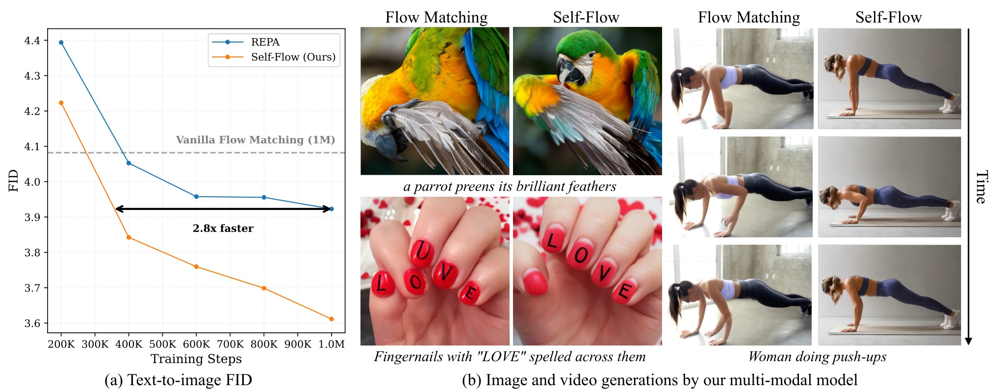

Self-Supervised Flow Matching for Scalable Multi-Modal Synthesis
외부 인코더 없이 flow matching 안에서 표현을 학습하는 Self-Flow
Hila Chefer*, Patrick Esser*, Dominik Lorenz, Dustin Podell, Vikash Raja, Vinh Tong, Antonio Torralba, Robin RombachBlack Forest Labs, MIT. Preprint, 2026-03-04. * 공동 1저자

오희석한성대학교Visual Intelligence Lab
VILAB 논문 리뷰
Self-Flow 요약
토큰마다 노이즈 수준을 다르게 섞은 입력에서, 더 깨끗한 입력을 본 EMA teacher의 feature를 맞히게 해 외부 인코더 없이 표현을 학습한다.
방법
- Dual-Timestep Scheduling: 토큰 일부(이미지에서 25%)에 두 번째 timestep 를 준다
- 토큰 하나의 timestep 분포는 그대로여서 추론 때와 입력 조건이 어긋나지 않는다
- 손실은 ,
결과
- ImageNet FID 5.70, REPA 5.89 (4M step)
- Text-to-image FID 3.61, REPA 3.92 (1M step)
- Video FVD 47.81, 비교한 방법 중 가장 낮다
Dual-Timestep Scheduling
모든 토큰이 같은
36개 토큰을 모두 = 0.3으로 섞는다. 이웃 토큰만 봐도 노이즈를 걷어 낼 수 있어서, 멀리 있는 토큰과의 관계를 배울 이유가 적다.
- velocity 예측 오차 (Eq. 2)
마스크 9개만 = 0.8
이 예시에서 나머지 27개는 = 0.3. student는 덜 흐린 토큰을 단서로 흐린 토큰을 추론하고, teacher는 같은 이미지를 모두 0.3으로 본다.
- velocity 예측 오차 (Eq. 2)
- student 층 투영과 teacher 층 feature의 cosine (Eq. 6)
- 0.8
Fig. 3 논문 그림을 다시 그렸다. 이미지는 Fig. 1의 Self-Flow 생성 결과이고, 노이즈는 설명을 위해 픽셀에 섞었다(실제 학습은 autoencoder latent). , 는 매번 에서 새로 뽑으므로 마스크 토큰이 더 깨끗할 때도 있다.
Text-to-image 결과
Table 2 625M 모델, 1M step, classifier-free guidance 없이 측정. sFID는 SRA가 8.05로 가장 낮고 Self-Flow는 8.14다.
ImageNet 256×256 결과
| Model | Steps | FID ↓ | sFID ↓ | IS ↑ | Pre. ↑ | Rec. ↑ |
|---|---|---|---|---|---|---|
| 외부 표현 없음 | ||||||
| SiT-XL/2 | 7M | 8.3 | 6.30 | 130.57 | 0.69 | 0.67 |
| SRA | 4M | 7.27 | 5.87 | 143.06 | 0.69 | 0.68 |
| Self-Flow | 4M | 5.70 | 4.97 | 151.40 | 0.72 | 0.67 |
| 외부 표현 사용 | ||||||
| REPA | 4M | 5.89 | 5.73 | 157.66 | 0.70 | 0.69 |
| Representation autoencoder | ||||||
| RAE | 1M | 3.24 | 6.73 | 218.53 | 0.83 | 0.54 |
| RAE + Self-Flow | 1M | 2.95 | 5.50 | 222.34 | 0.84 | 0.56 |
Table 1 굵은 값은 위 네 모델 중, 그리고 RAE 두 모델 중 가장 좋은 값이다.
정리와 토론
정리
- 토큰 일부만 더 흐리게 섞으면 student와 teacher 사이에 정보 차이가 생기고, 이것이 표현 학습 신호가 된다
- ImageNet과 text-to-image 모두 REPA보다 FID가 낮다. 정렬할 외부 인코더를 고를 필요가 없다
- 대가는 teacher forward가 한 번 더 드는 학습 비용이다 (Sec. 5)
토론
- Fig. 6b는 학습 FLOPs 기준으로도 비교하지만 지표는 CLIP score뿐이다. Teacher forward까지 넣은 같은 FLOPs에서 FID도 REPA보다 낮은가?
- ImageNet에서는 약 3M step이 지나서야 REPA를 앞선다 (Fig. 20a). 같은 데이터로 학습한 외부 인코더가 있으면 초반에는 정렬이 유리한가?
- 해석Fig. 4b에서 초·중간 층의 linear probing 정확도가 오른다. 이 feature를 인식 과제의 backbone으로 쓰면 DINOv2와 견줄 만한가?